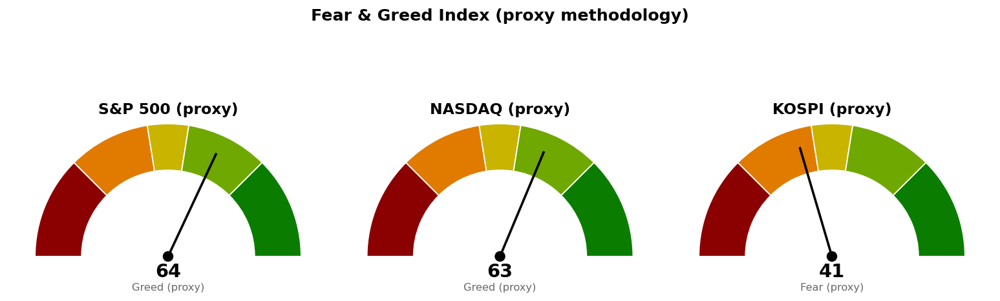

| 지수 | 종가 | 등락 | 기준 시각 |
|---|---|---|---|
| S&P 500 | 7,666.60 | +0.46% | 2026-09-02 미국 종가 |
| 나스닥 종합 | 26,217.83 | +0.45% | 2026-09-02 미국 종가 |
| 코스피 | 6,643.84 | +1.24% | 2026-09-03 한국 종가 |
| 니케이 225 | 64,455.83 | +0.20% | 2026-09-03 일본 종가 |
코스피가 +1.24%로 네 지수 중 가장 크게 올랐습니다. 미국 두 지수는 0.45~0.46%로 사실상 같은 폭입니다.
섹터 상대강도는 미국 SPDR 섹터 ETF(XL로 시작하는 종목) 기준이며, 한국·일본은 지수 등락만 제공됩니다. 아래 표를 코스피·니케이에 그대로 적용하지 마시기 바랍니다.
| 구분 | 섹터 | ETF | 등락 |
|---|---|---|---|
| 주도 | 소재 | XLB | +1.69% |
| 주도 | 커뮤니케이션 서비스 | XLC | +1.39% |
| 주도 | 금융 | XLF | +0.80% |
| 부진 | 산업재 | XLI | +0.03% |
| 부진 | 기술 | XLK | -0.02% |
| 부진 | 부동산 | XLRE | -0.70% |
핵심은 지수가 0.46% 오르는 동안 기술 섹터만 하락했다는 점입니다. 지수를 끌어올린 것은 소재(+1.69%)와 커뮤니케이션 서비스(+1.39%)이며, 기술의 비중을 감안하면 지수 상승은 폭이 넓어진 결과이지 주도주가 더 간 결과가 아닙니다. 금리에 민감한 부동산이 -0.70%로 가장 부진한 것은 장기금리가 아직 내려오지 않았다는 신호로 읽는 편이 자연스럽습니다.
1. 브로드컴, AI 칩 전망 상향 — 그러나 주가는 하락 (Reuters·MarketWatch, 9/2~9/3) 브로드컴이 실적을 예상보다 잘 냈고 AI 칩 매출 전망까지 올렸는데 주가는 오히려 빠졌습니다. 왜 중요한가 하면, 오늘 기술 섹터가 홀로 하락한 이유를 실적 악화가 아니라 값을 매기는 배수의 문제로 좁혀 주기 때문입니다. AI 투자 자체가 꺾였다는 근거는 이번 발표에 없습니다.
2. 연준 베이지북 — 경기 소폭 개선, 물가 완만 상승 (Reuters, 9/2) 경기가 조금 나아지고 물가는 완만하게 올랐다는 내용입니다. 극단적인 방향이 없다는 뜻이며, 이 조합이 금융(+0.80%)과 소재(+1.69%)가 오르고 부동산(-0.70%)이 밀린 오늘의 섹터 배치와 맞아떨어집니다. 금리 인하를 서둘러야 할 근거도, 긴축을 되돌려야 할 근거도 이 보고서에는 없습니다.
3. 한국 반도체 수출 전년 대비 3배 (CNBC, 9/3) 코스피가 +1.24%로 가장 강했던 배경입니다. 다만 기사 자체가 던지는 질문이 더 중요합니다 — 반도체 한 축에 이 정도로 실린 상승은, 그 축이 둔화될 때 지수 전체가 함께 둔화됩니다. 아래 Fear/Greed에서 코스피만 공포 구간에 있는 것과 겹쳐 보시기 바랍니다.
아래 점수는 CNN 공식 지수가 아니라 모멘텀·RSI(상대강도지수, 최근 상승폭과 하락폭의 비율)·변동성·안전자산 선호 네 가지로 계산한 대용 지표입니다.
| 지수 | 점수 | 판정 |
|---|---|---|
| S&P 500 | 63.9 | 탐욕 |
| 나스닥 | 62.6 | 탐욕 |
| 코스피 | 40.9 | 공포 |

미국 쪽 변동성 항목은 VIX(옵션 가격에서 뽑아낸 향후 30일 변동성 예상치) 15.2를 그대로 썼고 별다른 문제가 없었습니다. 눈에 띄는 것은 코스피가 오늘 가장 많이 올랐는데도 점수는 40.9로 혼자 공포 구간이라는 점입니다. 안전자산 선호 항목이 79.2로 높게 나온 것이 전체 점수를 낮췄습니다.
기술이 빠지고 소재·통신·금융이 받치는 국면입니다. 지수만 보면 조용한 상승이지만 안을 열면 자금이 옮겨 다니고 있습니다. 미국은 탐욕 구간이라 새로 크게 실을 자리는 아니며, 코스피는 오늘 가장 강했으나 상승이 반도체 한 축에 몰려 있다는 점을 함께 보셔야 합니다. 확인해야 할 것은 기술 섹터가 이틀 더 밀리는지, 그리고 S&P500이 7,631.47을 종가로 지키는지 두 가지입니다.
이 브리핑은 투자 판단에 참고하시라고 정리한 자료이며, 투자자문이 아닙니다. 최종 판단과 그 결과는 투자자 본인에게 있습니다.